48 支持向量机
48.1 课程：金融数据分析与建模
本章介绍支持向量机（Support Vector Machine，SVM），这是统计学习中一类思想深刻、在实践中被广泛使用的分类方法。与逻辑回归等基于概率的方法不同，SVM 从一个几何问题出发：在所有能将两类样本分开的决策边界中，哪一条是「最好」的？
本章沿着以下思路递进：
\[ \text{最大间隔分类器} \longrightarrow \text{支持向量分类器（软间隔）} \longrightarrow \text{支持向量机（核技巧）} \]
每一步都是在前一步遇到局限之后的自然推广。
本章使用的数据集
| 数据集 | 样本量 | 结构 | 用途 |
|---|---|---|---|
| 数据集 A | 200 | 两类线性可分，特征空间二维 | 第一至三部分 |
| 数据集 B | 200 | 两类线性不可分（同心圆） | 第四部分 |
两个数据集均为模拟数据，由 ml_SVM_codes.ipynb 生成，结构简洁，便于将注意力集中在方法本身。
48.2 第一部分 引入：什么是最好的分界线？
48.2.1 1.1 一个分类问题的起点
下图是数据集 A 的散点图。两类样本（深蓝色和深黄色）在二维平面上被一条直线清晰地分开。
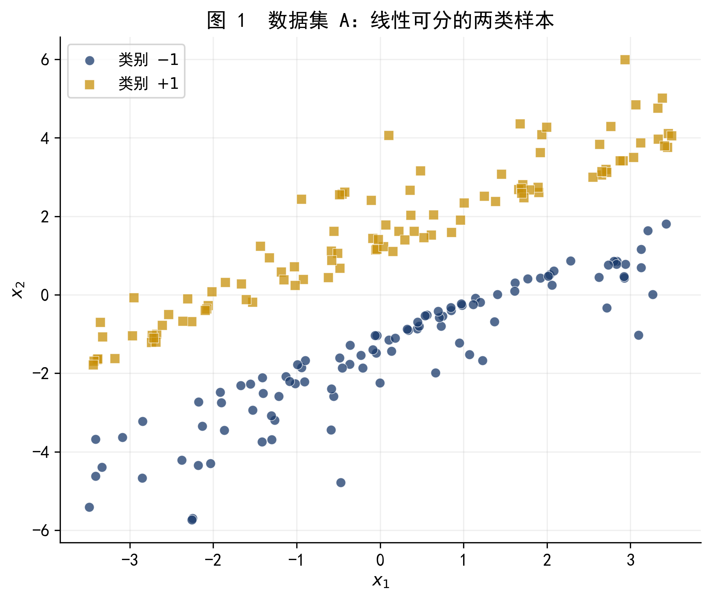
图 1 数据集 A：两类样本线性可分。
面对这个问题，一个自然的想法是：找一条直线，把深蓝色和深黄色完全分开，然后对新来的样本，根据它在直线的哪一侧来决定它的类别。
但问题随之而来——
48.2.2 1.2 无穷多条可行的分界线
只要数据是线性可分的，能分开两类的直线就有无穷多条。图 2 展示了其中 5 条。
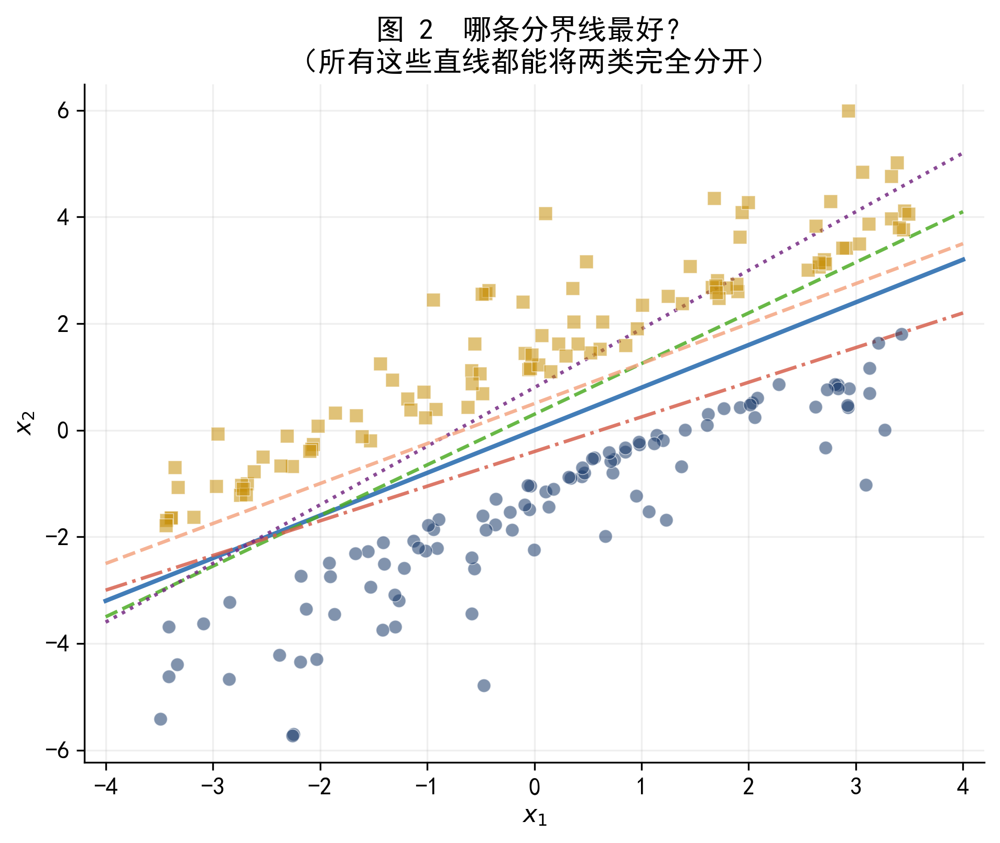
图 2 所有这些直线都能将两类完全分开，但它们对新样本的预测可能大相径庭。
这 5 条线都是「正确」的——它们都能把训练集分开，训练误差都是 0。但直觉告诉我们，它们不是一样好的：靠近某一类样本的分界线，一旦遇到稍有偏移的新样本，就容易分错。
我们需要一个原则来定义「最好」。SVM 给出的答案是：最好的分界线，是离两类都尽可能远的那一条。这就是最大化间隔的核心思想。
48.3 第二部分 最大间隔分类器
48.3.1 2.1 超平面与间隔
在 \(p\) 维特征空间中，超平面（hyperplane）是一个 \(p-1\) 维的平面，定义为
\[ f(\mathbf{x}) = \mathbf{w}^\top \mathbf{x} + b = 0 \tag{2.1} \]
其中 \(\mathbf{w} \in \mathbb{R}^p\) 是法向量，\(b \in \mathbb{R}\) 是截距。在二维平面上，超平面退化为一条直线 \(w_1 x_1 + w_2 x_2 + b = 0\)。
对于超平面两侧的样本，\(f(\mathbf{x})\) 的符号不同：
\[ f(\mathbf{x}_i) > 0 \iff \text{样本 } i \text{ 在超平面「上方」（正侧）} \] \[ f(\mathbf{x}_i) < 0 \iff \text{样本 } i \text{ 在超平面「下方」（负侧）} \]
因此，一个分类规则可以写成：若 \(f(\mathbf{x}) > 0\) 则预测为类别 \(+1\)，否则预测为类别 \(-1\)。
间隔（margin）是什么？
在决策超平面两侧，各找一个距离最近的样本，过这两个样本做两个与决策超平面平行的超平面（称为支撑超平面），这两个支撑超平面之间的距离就是间隔。最大间隔分类器（Maximal Margin Classifier）的目标，就是找一个使间隔最大的超平面。
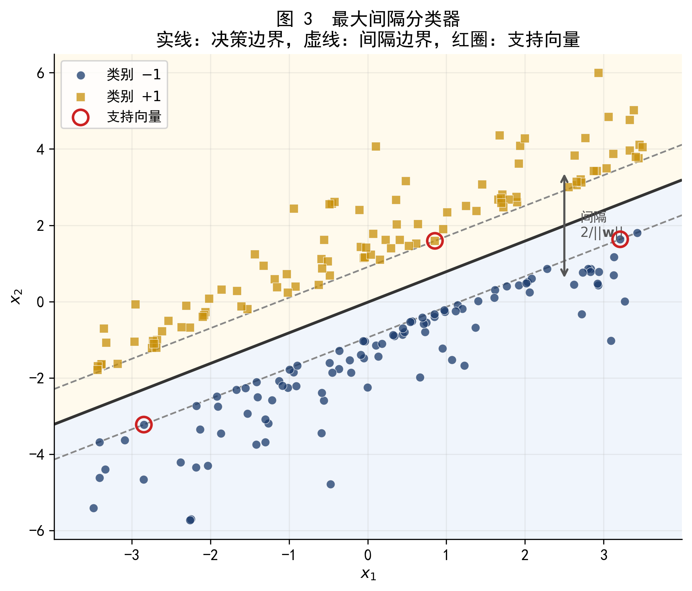
图 3 最大间隔分类器的结果：实线为决策边界 \(f(\mathbf{x})=0\)，两条虚线为支撑超平面 \(f(\mathbf{x})=\pm 1\)，红色圆圈标注的点为支持向量。间隔带（两虚线之间的灰色区域）内没有任何训练样本。
48.3.2 2.2 支持向量
恰好落在支撑超平面上（即 \(f(\mathbf{x}_i) = \pm 1\)）的训练样本称为支持向量（support vector）。这个名字来自它们在数学上的作用：它们「支撑」着间隔带，决定了决策边界的位置。
支持向量有一个至关重要的性质：决策边界完全由支持向量决定，与其他样本无关。
图 6 用实验直观地验证了这一点。
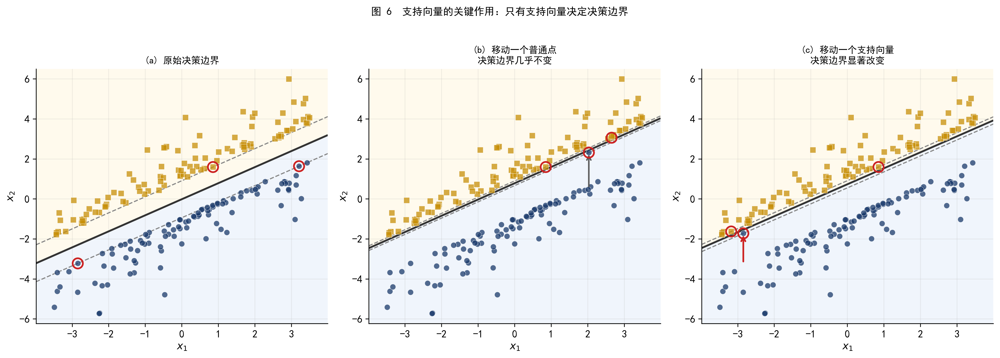
图 6 三个子图对比：(a) 原始决策边界；(b) 将一个普通点移动后，决策边界几乎不变；(c) 将一个支持向量移动后，决策边界显著偏移。这说明模型对普通样本的扰动免疫，但对支持向量的变化极度敏感。
48.3.3 2.3 间隔宽度的几何含义
从数学上看，间隔宽度等于两个支撑超平面之间的距离。当我们把超平面标准化为 \(f(\mathbf{x}) = \pm 1\)，可以证明这个距离等于
\[ \text{间隔宽度} = \frac{2}{\|\mathbf{w}\|} \tag{2.2} \]
图 4 给出了几何示意。
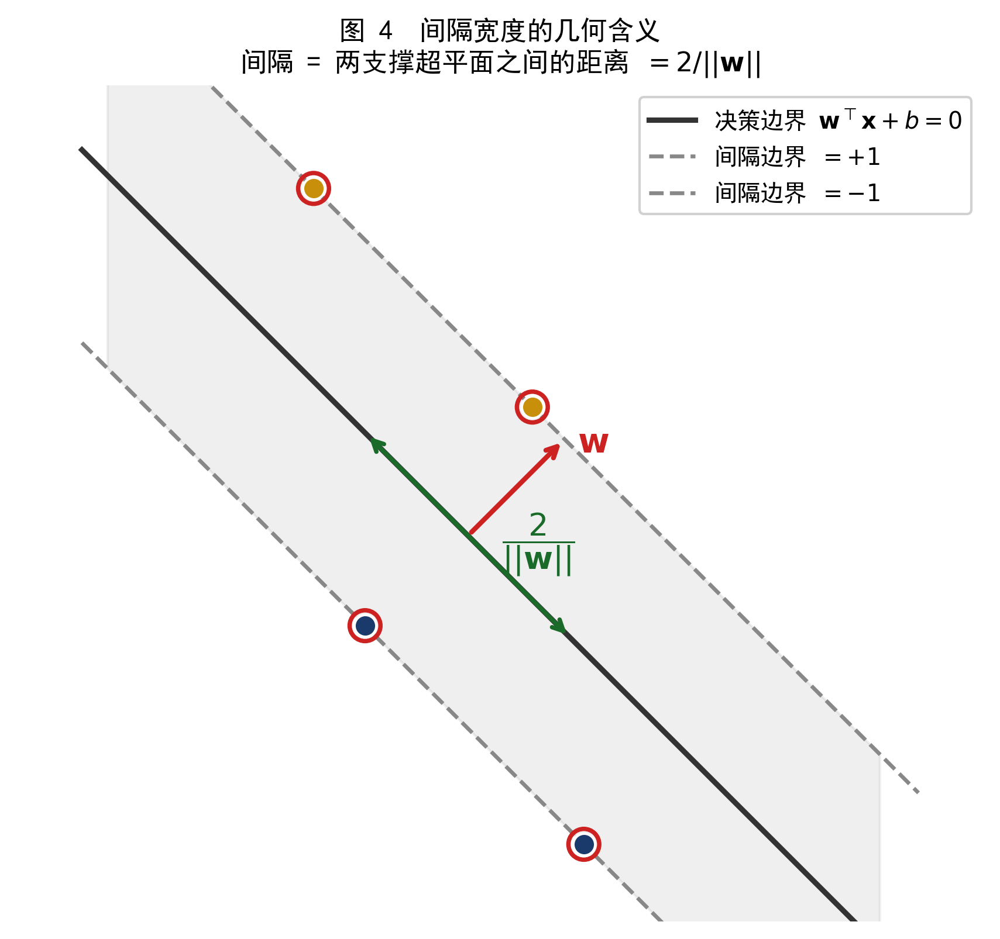
图 4 间隔宽度的几何含义。红色箭头为法向量 \(\mathbf{w}\)，绿色双向箭头表示间隔宽度 \(2/\|\mathbf{w}\|\)。法向量越短（即 \(\|\mathbf{w}\|\) 越小），间隔越宽。
48.3.4 2.4 最大间隔的优化问题
最大化间隔 \(2/\|\mathbf{w}\|\)，等价于最小化 \(\|\mathbf{w}\|^2\)。同时，要求所有训练样本被正确分类，且落在间隔带之外。用数学语言写出：
\[ \min_{\mathbf{w},\, b} \quad \frac{1}{2}\|\mathbf{w}\|^2 \] \[ \text{s.t.} \quad y_i(\mathbf{w}^\top \mathbf{x}_i + b) \geq 1, \quad i = 1, \ldots, n \tag{2.3} \]
其中 \(y_i \in \{-1, +1\}\) 为样本 \(i\) 的真实类别标签。约束条件 \(y_i f(\mathbf{x}_i) \geq 1\) 是一个紧凑的写法：
- 当 \(y_i = +1\) 时，要求 \(f(\mathbf{x}_i) \geq 1\)（正类在正侧，且不进入间隔带）
- 当 \(y_i = -1\) 时，要求 \(f(\mathbf{x}_i) \leq -1\)（负类在负侧，且不进入间隔带）
这是一个凸二次规划（Convex Quadratic Programming）问题，有唯一全局最优解，可以用标准优化软件高效求解。
公式 (2.3) 的拉格朗日对偶问题揭示了一个重要结构：最优解 \(\mathbf{w}^*\) 可以写成
\[ \mathbf{w}^* = \sum_{i \in \mathcal{S}} \alpha_i y_i \mathbf{x}_i \]
其中求和仅遍历支持向量的下标集合 \(\mathcal{S}\)，\(\alpha_i \geq 0\) 为对偶变量（拉格朗日乘子）。这精确地说明了为何非支持向量对 \(\mathbf{w}^*\) 没有贡献：它们对应的 \(\alpha_i = 0\)。
完整的对偶推导见附录 A。
48.3.5 2.5 最大间隔分类器的局限
最大间隔分类器有两个根本性的局限：
局限一：对异常值极度敏感。 如果一个训练样本落在「错误」的一侧或间隔带内，整个决策边界就必须重新调整，可能引起剧烈变化。
局限二：线性不可分时无解。 公式 (2.3) 的约束要求所有样本被正确分类，一旦数据中有任何一点无法被直线分开，问题就变得无可行解。
真实数据几乎都存在类别重叠、噪声或异常值，最大间隔分类器在实践中很少单独使用。这引出了更实用的推广：支持向量分类器。
48.4 第三部分 支持向量分类器（软间隔）
48.4.1 3.1 引入松弛：允许犯错
支持向量分类器（Support Vector Classifier，SVC）在最大间隔的优化问题中引入了松弛变量（slack variable）\(\xi_i \geq 0\)，允许部分训练样本违反间隔约束：
\[ \min_{\mathbf{w},\, b,\, \boldsymbol{\xi}} \quad \frac{1}{2}\|\mathbf{w}\|^2 + C\sum_{i=1}^n \xi_i \] \[ \text{s.t.} \quad y_i(\mathbf{w}^\top \mathbf{x}_i + b) \geq 1 - \xi_i, \quad \xi_i \geq 0, \quad i = 1, \ldots, n \tag{3.1} \]
松弛变量 \(\xi_i\) 的几何含义如下：
| \(\xi_i\) 的值 | 样本位置 |
|---|---|
| \(\xi_i = 0\) | 样本在间隔带外侧，完全满足约束 |
| \(0 < \xi_i < 1\) | 样本进入间隔带，但仍在正确一侧 |
| \(\xi_i = 1\) | 样本恰好落在决策边界上 |
| \(\xi_i > 1\) | 样本越过决策边界，被错误分类 |
目标函数中的 \(C \sum_i \xi_i\) 项对违反约束的样本进行惩罚，\(C > 0\) 是控制惩罚力度的调节参数。
48.4.2 3.2 调节参数 \(C\)：偏差与方差的权衡
参数 \(C\) 是支持向量分类器最关键的超参数，它控制「允许多少错误」：
\(C\) 很大：对违反约束的惩罚极重，模型尽力减小 \(\sum \xi_i\)， 等价于减少错分或进入间隔带的点，间隔因此变窄。 结果：低训练误差，但对噪声敏感，容易过拟合（高方差）。
\(C\) 很小：对违反约束的惩罚较轻，允许更多样本进入间隔带甚至被错分， 间隔变宽，决策边界更稳定。 结果：较高训练误差，但泛化能力更好（低方差，偏差稍大）。
图 5 直观展示了不同 \(C\) 值的效果。
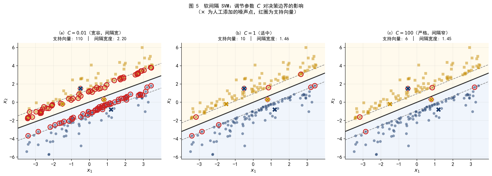
图 5 数据集 A（加入少量噪声点，用 \(\times\) 标记）上，不同 \(C\) 值的决策边界对比。随着 \(C\) 从 0.01 增大到 100，间隔宽度逐渐收窄，支持向量数量减少，模型对噪声点的容忍度降低。
SVM 中的 \(C\) 与正则化回归中的惩罚参数 \(\lambda\) 扮演相反方向的角色：
| 参数 | 增大时 | 减小时 |
|---|---|---|
| SVM 的 \(C\) | 更严格，间隔窄，容易过拟合 | 更宽容，间隔宽，容易欠拟合 |
| Ridge/Lasso 的 \(\lambda\) | 更强正则化，欠拟合 | 更弱正则化，容易过拟合 |
注意方向相反：\(C\) 越大等于惩罚越重、越「紧」；而 \(\lambda\) 越大也等于惩罚越重、越「松」（对系数的约束越强）。
sklearn 的 SVC 中，\(C\) 对应的就是 C 参数；LogisticRegression 中同样有一个 C 参数，含义完全一致（是正则化强度的倒数）。
48.4.3 3.3 软间隔下谁是支持向量？
在硬间隔分类器中，支持向量是恰好落在支撑超平面上（\(\xi_i = 0\)，\(y_i f(\mathbf{x}_i) = 1\)）的点。
在软间隔分类器中，支持向量的范围扩大为所有落在间隔带内或被错分的样本，即 \(\xi_i > 0\) 的所有点，包括：
- 落在间隔带内（\(0 < \xi_i \leq 1\)）但仍被正确分类的点
- 越过决策边界被错误分类的点（\(\xi_i > 1\)）
从图 5 可以看到，\(C\) 越小，被纳入支持向量的样本越多，模型越依赖大量样本来稳定边界。\(C\) 越大，支持向量减少，模型更专注于几个边界附近的关键样本。
这个特性意味着 SVM 的预测函数只依赖于支持向量，具有稀疏性——在样本量很大时，真正参与计算的样本数量可能远少于总样本量。
48.5 第四部分 支持向量机与核技巧
48.5.1 4.1 线性边界的失败
前面的讨论都假设两类样本可以被一个超平面（线性边界）分开，或者至少近似分开。但现实中的数据经常不满足这个条件。
图 7 展示了数据集 B：内圆为一类，外环为另一类——这是一个典型的非线性结构，线性边界根本无法有效分开两类。
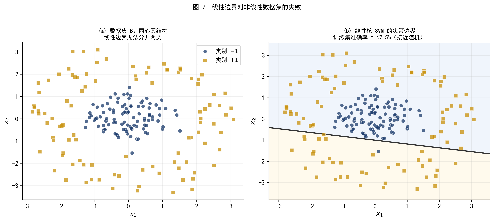
图 7 (a) 数据集 B 的散点图，同心圆结构；(b) 强行使用线性核 SVM，训练集准确率接近随机水平，决策边界完全无效。
48.5.2 4.2 核技巧的直觉：升维使线性可分
面对线性不可分的数据，一个自然的想法是：将特征映射到更高维的空间，使数据在高维空间中变得线性可分，然后在高维空间中找超平面。
对于数据集 B，一个合适的变换是引入第三个特征 \(x_3 = x_1^2 + x_2^2\)（即到原点的距离平方）。在三维空间 \((x_1, x_2, x_3)\) 中，内圆的 \(x_3\) 值较小（集中在下方），外环的 \(x_3\) 值较大（集中在上方），两类可以被一个水平面 \(x_3 = c\) 分开。
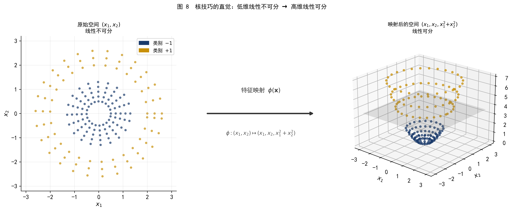
图 8 核技巧的直觉。左图：原始二维空间中线性不可分；右图：映射到三维空间 \((x_1, x_2, x_1^2{+}x_2^2)\) 后，一个水平面（灰色平面）即可分开两类。
这个思路看起来很直接，但有一个实际问题：
如果原始特征维度 \(p\) 很高，所有可能的多项式特征组合会使维度爆炸，> 计算量变得无法承受。
核技巧（Kernel Trick）巧妙地绕过了这个问题。
48.5.3 4.3 核函数：不显式升维的内积计算
回顾 SVM 的对偶问题（附录 A）可以发现，最终的优化问题和预测函数都只涉及样本之间的内积 \(\mathbf{x}_i^\top \mathbf{x}_j\)，而不直接涉及 \(\mathbf{x}\) 本身。
如果我们用特征映射 \(\phi: \mathbb{R}^p \to \mathcal{H}\) 将样本升维，对偶问题中的内积变为 \(\phi(\mathbf{x}_i)^\top \phi(\mathbf{x}_j)\)。核函数（Kernel Function）的定义是：
\[ K(\mathbf{x}_i, \mathbf{x}_j) = \phi(\mathbf{x}_i)^\top \phi(\mathbf{x}_j) \tag{4.1} \]
核函数的关键性质是：可以直接在原始空间中计算高维内积，而不需要显式地构造 \(\phi(\mathbf{x})\)。这使得即使映射后的维度是无穷大（如 RBF 核），计算量也只与原始维度 \(p\) 相关。
1. 线性核（Linear Kernel）
\[K(\mathbf{x}_i, \mathbf{x}_j) = \mathbf{x}_i^\top \mathbf{x}_j\]
等价于不做特征映射，直接在原始空间求超平面。适合特征维度高、样本量大、数据本身近似线性可分的情形。
2. 多项式核（Polynomial Kernel）
\[K(\mathbf{x}_i, \mathbf{x}_j) = (\gamma\, \mathbf{x}_i^\top \mathbf{x}_j + r)^d\]
等价于将原始特征扩展为所有 \(d\) 次以内的多项式组合。参数 \(d\)（次数）控制边界的弯曲程度；\(d=1\) 退化为线性核。
3. 径向基函数核（RBF/Gaussian Kernel）
\[K(\mathbf{x}_i, \mathbf{x}_j) = \exp\!\left(-\gamma \|\mathbf{x}_i - \mathbf{x}_j\|^2\right)\]
等价于映射到无穷维的特征空间，可以拟合任意形状的决策边界。参数 \(\gamma > 0\) 控制每个样本的「影响范围」：\(\gamma\) 越大，影响范围越小，边界越弯曲。RBF 核是实践中最常用的核函数。
48.5.4 4.4 RBF 核 SVM：在数据集 B 上的效果
将 RBF 核 SVM 应用于数据集 B，可以得到与数据结构高度吻合的非线性决策边界。
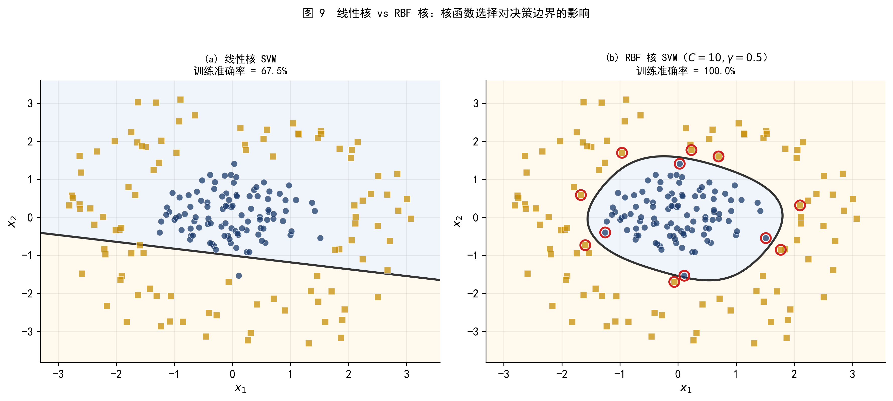
图 9 线性核与 RBF 核的对比。左图：线性核完全失败；右图：RBF 核（\(C=10, \gamma=0.5\)）准确地学到了同心圆的边界。
48.5.5 4.5 参数 \(\gamma\) 的作用：局部 vs 全局
RBF 核有两个关键参数：\(C\)（控制软间隔的宽容度）和 \(\gamma\)（控制核函数的「宽度」）。
\(\gamma\) 的直觉：它决定了单个训练样本对决策边界的影响范围。
- \(\gamma\) 很小：每个样本影响范围广，相当于用「宽高斯」来感知周围样本。 决策边界平滑，可能欠拟合。
- \(\gamma\) 很大：每个样本只影响紧邻的区域，边界可以非常弯曲以适应每一个点。 容易过拟合，在训练集上表现好但泛化差。
图 10 用三个 \(\gamma\) 值展示了从欠拟合到过拟合的过渡。
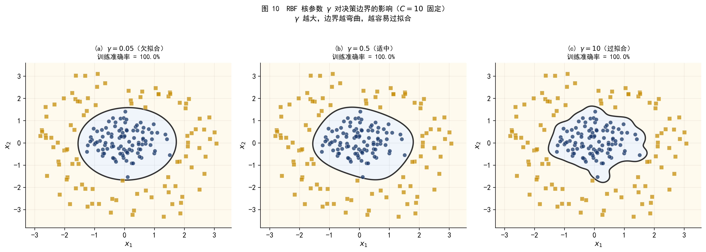
图 10 RBF 核参数 \(\gamma\) 的影响（\(C=10\) 固定）。(a) \(\gamma=0.05\)：边界过于平滑，欠拟合；(b) \(\gamma=0.5\)：边界适中，准确区分两类；(c) \(\gamma=10\)：边界高度弯曲，过拟合——每个样本几乎形成独立的「气泡」。
48.6 第五部分 参数选择与其他核函数
48.6.1 5.1 用交叉验证选择 \(C\) 和 \(\gamma\)
RBF 核 SVM 有两个需要调节的参数：\(C\) 和 \(\gamma\)。它们的选择对模型性能影响很大，通常用网格搜索结合交叉验证来确定。
做法是：对 \(C\) 和 \(\gamma\) 各取若干候选值，构成一个网格；对网格中的每对 \((C, \gamma)\)，用 \(K\) 折交叉验证估计其泛化误差；选择 CV 误差最低的参数组合。
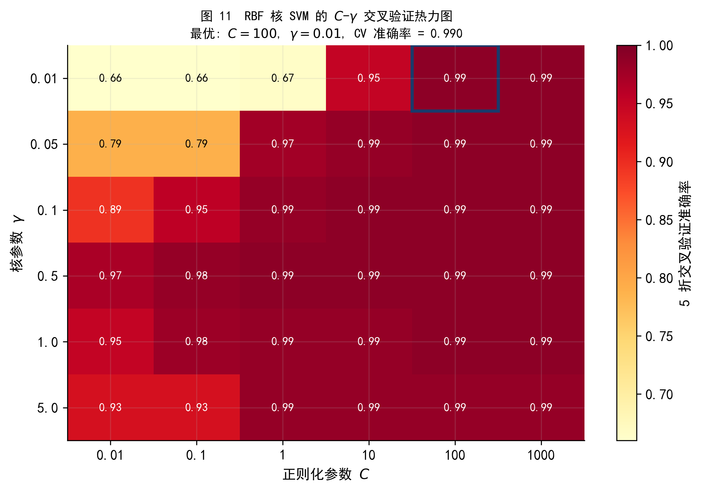
图 11 在数据集 B 上的 \(C\)-\(\gamma\) 网格搜索热力图（5 折 CV）。颜色越深代表交叉验证准确率越高，蓝色方框标出最优参数组合。从图中可以看到，\(\gamma\) 过大或 \(C\) 过小时性能显著下降。
在实践中，\(C\) 和 \(\gamma\) 的候选值通常取对数间隔（如 \(10^{-2}, 10^{-1}, \ldots, 10^3\)），因为它们的合理范围横跨多个数量级。
sklearn 的 GridSearchCV 可以自动完成这个过程：
from sklearn.svm import SVC
from sklearn.model_selection import GridSearchCV
param_grid = {
'C': [0.01, 0.1, 1, 10, 100],
'gamma': [0.01, 0.1, 0.5, 1.0, 5.0],
}
grid = GridSearchCV(SVC(kernel='rbf'), param_grid, cv=5, scoring='accuracy')
grid.fit(X_train, y_train)
print(f'最优参数: {grid.best_params_}')
print(f'CV 准确率: {grid.best_score_:.4f}')48.6.2 5.2 多项式核
多项式核 \(K(\mathbf{x}_i, \mathbf{x}_j) = (\gamma \mathbf{x}_i^\top \mathbf{x}_j + r)^d\) 通过调节次数 \(d\) 来控制决策边界的复杂度。图 12 展示了不同次数的多项式核在数据集 B 上的效果。
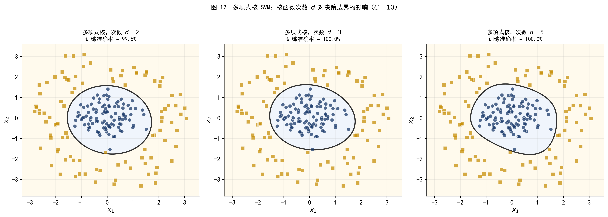
图 12 多项式核 SVM，次数从 \(d=2\) 到 \(d=5\)（\(C=10\)）。\(d=2\) 时，决策边界为椭圆或圆锥曲线，已能较好地适应同心圆结构；\(d\) 增大后，边界形状更复杂，但对这个数据集的改善有限。相比 RBF 核，多项式核更适合特征之间存在明确多项式交互关系的场景。
48.7 第六部分 SVM 与 Logistic 回归的比较
48.7.1 6.1 决策边界的对比
SVM 和 Logistic 回归都是二分类方法，在线性可分的情形下都能找到一条直线作为决策边界。但它们选择边界的出发点不同：
- SVM：最大化间隔，决策边界尽量远离两类样本，只关心间隔带附近的支持向量
- Logistic 回归：最大化对数似然，充分利用所有样本的信息来估计分类概率
图 13 展示了两种方法在同一数据集上的决策边界。
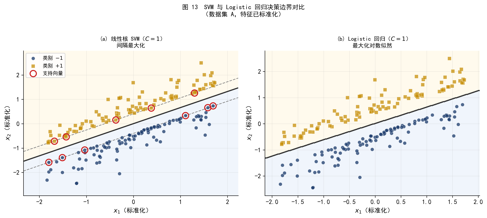
图 13 线性核 SVM 与 Logistic 回归的决策边界对比（数据集 A，已标准化）。两者的边界走向相似，但位置略有不同：SVM 的边界恰好在间隔带的中央，而 Logistic 回归的边界由整个数据集的概率结构决定。
48.7.2 6.2 两种方法的实质联系
从损失函数的角度，SVM 和 Logistic 回归的差异变得更清晰。两者都可以写成「损失 + 正则化」的形式：
\[ \min_{\mathbf{w}, b} \sum_{i=1}^n L(y_i, f(\mathbf{x}_i)) + \lambda \|\mathbf{w}\|^2 \]
区别在于损失函数的选取：
SVM（Hinge 损失）：\(L_{\text{hinge}}(y, f) = \max(0,\, 1 - y \cdot f)\)
样本被正确分类且在间隔带外时损失为 0；越过间隔带则线性增加。
Logistic 回归（对数损失）：\(L_{\text{log}}(y, f) = \log(1 + e^{-y \cdot f})\)
即使样本被正确分类，损失也不为 0（只是很小），所有样本都参与梯度更新。
这解释了 SVM 的稀疏性：Hinge 损失在正确分类区域为零，意味着远离边界的样本不贡献梯度，只有支持向量（位于 \(y \cdot f \leq 1\) 区域内的样本）真正影响模型参数。
设横轴为函数间隔 \(m = y \cdot f(\mathbf{x})\)，纵轴为损失值：
| \(m\) 的值 | Hinge 损失 | 对数损失 |
|---|---|---|
| \(m < 0\)（分错） | \(1 - m > 1\)（线性增长） | \(\log(1+e^{-m}) > \log 2\) |
| \(m = 0\)（边界上） | \(1\) | \(\log 2 \approx 0.693\) |
| \(m = 1\)（间隔边界） | \(0\) | \(\log 2 / e \approx 0.313\) |
| \(m > 1\)（间隔带外） | \(0\)（完全无贡献） | \(> 0\)（仍有贡献） |
Hinge 损失在 \(m > 1\) 处完全为 0，这正是 SVM 稀疏性的来源。
48.7.3 6.3 如何在实践中选择？
倾向使用 SVM 的场景：
- 特征维度高（如文本分类，\(p \gg n\)），线性核 SVM 效率高且效果好
- 数据中存在清晰的间隔结构，两类之间有明显分离
- 非线性决策边界，同时不确定合适的特征变换形式（RBF 核是通用选择）
- 不需要概率输出，只需要类别预测
倾向使用 Logistic 回归的场景：
- 需要输出校准的概率（如违约概率用于风险定价）
- 需要解释系数的经济含义（边际效应等）
- 样本量很大，计算效率更重要（Logistic 回归的训练通常更快）
- 满足正态性假设时，Logistic 回归的统计性质更完善
在很多实际任务中，两种方法的预测精度差异并不大，选择往往取决于对概率输出、可解释性和计算成本的综合权衡。
48.8 第七部分 Python 实践
本节展示在模拟数据集上使用 sklearn 实现 SVM 的核心代码。
48.8.1 7.1 数据准备与标准化
import numpy as np
import pandas as pd
from sklearn.svm import SVC
from sklearn.preprocessing import StandardScaler
from sklearn.model_selection import train_test_split, GridSearchCV
from sklearn.metrics import accuracy_score, classification_report
# 读取数据集 A（由 ml_SVM_codes.ipynb 生成）
df_A = pd.read_csv('./data/svm_data_A_linear.csv')
X_A = df_A[['x1', 'x2']].values
y_A = df_A['y'].values
# 标准化（SVM 对特征尺度敏感，标准化是必要步骤）
scaler = StandardScaler()
X_A_sc = scaler.fit_transform(X_A)
# 划分训练/测试集
X_train, X_test, y_train, y_test = train_test_split(
X_A_sc, y_A, test_size=0.3, random_state=0
)
print(f'训练集: {X_train.shape[0]} 条，测试集: {X_test.shape[0]} 条')SVM 的优化问题基于欧氏距离（\(\|\mathbf{w}\|^2\) 和 \(\|\mathbf{x}_i - \mathbf{x}_j\|^2\)），对特征的量纲非常敏感。如果 \(x_1\) 的取值范围是 \([0, 1000]\) 而 \(x_2\) 是 \([0, 1]\)，模型会几乎完全忽略 \(x_2\)。
在使用 SVM 之前，务必对所有特征进行标准化（减均值、除标准差）。注意：StandardScaler 应在训练集上 fit，然后用相同的参数 transform 测试集，避免数据泄露。
48.8.2 7.2 硬间隔与软间隔 SVM
# 硬间隔（近似）：C 取极大值
svm_hard = SVC(kernel='linear', C=1e6)
svm_hard.fit(X_train, y_train)
print(f'硬间隔 SVM 测试准确率: {accuracy_score(y_test, svm_hard.predict(X_test)):.4f}')
print(f'支持向量数量: {svm_hard.support_vectors_.shape[0]}')
print(f'法向量 w: {svm_hard.coef_[0]}')
print(f'截距 b: {svm_hard.intercept_[0]:.4f}')
import numpy as np
margin = 2 / np.linalg.norm(svm_hard.coef_)
print(f'间隔宽度: {margin:.4f}')
# 软间隔：指定 C 值
for C in [0.01, 0.1, 1.0, 10.0, 100.0]:
svm = SVC(kernel='linear', C=C)
svm.fit(X_train, y_train)
acc = accuracy_score(y_test, svm.predict(X_test))
n_sv = svm.support_vectors_.shape[0]
print(f'C={C:6.2f} | 测试准确率={acc:.3f} | 支持向量数={n_sv}')48.8.3 7.3 RBF 核 SVM 与参数调优
# 读取数据集 B
df_B = pd.read_csv('./data/svm_data_B_nonlinear.csv')
X_B = df_B[['x1', 'x2']].values
y_B = df_B['y'].values
scaler_B = StandardScaler()
X_B_sc = scaler_B.fit_transform(X_B)
X_tr, X_te, y_tr, y_te = train_test_split(
X_B_sc, y_B, test_size=0.3, random_state=42
)
# 网格搜索
param_grid = {
'C': [0.1, 1, 10, 100],
'gamma': [0.05, 0.1, 0.5, 1.0, 5.0],
}
grid_search = GridSearchCV(
SVC(kernel='rbf'),
param_grid,
cv=5,
scoring='accuracy',
refit=True,
n_jobs=-1
)
grid_search.fit(X_tr, y_tr)
print(f'最优参数: {grid_search.best_params_}')
print(f'CV 准确率: {grid_search.best_score_:.4f}')
best_svm = grid_search.best_estimator_
print(f'测试集准确率: {accuracy_score(y_te, best_svm.predict(X_te)):.4f}')
print()
print(classification_report(y_te, best_svm.predict(X_te),
target_names=['类别 -1', '类别 +1']))48.8.4 7.4 使用 Pipeline 避免数据泄露
在交叉验证中，StandardScaler 应该在每个 fold 内单独 fit，而不是在整个训练集上 fit 后再传入 CV。使用 Pipeline 可以自动处理这个问题：
from sklearn.pipeline import Pipeline
pipe = Pipeline([
('scaler', StandardScaler()),
('svm', SVC(kernel='rbf')),
])
param_grid_pipe = {
'svm__C': [0.1, 1, 10, 100],
'svm__gamma': [0.05, 0.1, 0.5, 1.0],
}
grid_pipe = GridSearchCV(
pipe, param_grid_pipe, cv=5, scoring='accuracy', n_jobs=-1
)
grid_pipe.fit(X_B, y_B) # 直接传原始数据，Pipeline 内部处理标准化
print(f'Pipeline 最优参数: {grid_pipe.best_params_}')
print(f'Pipeline CV 准确率: {grid_pipe.best_score_:.4f}')48.9 小结
本章沿着三个层次递进地介绍了支持向量机：
\[ \underbrace{\text{最大间隔分类器}}_{\text{线性可分，无噪声}} \xrightarrow{\text{引入松弛变量 } \xi_i} \underbrace{\text{支持向量分类器}}_{\text{线性，容许错误}} \xrightarrow{\text{核函数替换内积}} \underbrace{\text{支持向量机}}_{\text{非线性决策边界}} \]
关键结论：
最大间隔是 SVM 的核心思想：在所有可行的分类超平面中，选择使间隔最大的那一条， 这样的边界对数据扰动最鲁棒
支持向量完全决定决策边界。非支持向量可以任意移动（只要不越过间隔带）， 边界保持不变。这给了 SVM 独特的稀疏性
参数 \(C\) 控制软间隔的宽容度：\(C\) 越大越严格（间隔窄，低偏差高方差）， \(C\) 越小越宽容（间隔宽，高偏差低方差）
核技巧通过隐式映射到高维空间，使 SVM 能处理任意形状的非线性决策边界， 同时计算成本仅与原始维度相关
RBF 核是最常用的非线性核，参数 \(\gamma\) 控制边界的局部性：\(\gamma\) 越大越局部， 越容易过拟合。实践中用交叉验证在 \((C, \gamma)\) 网格上搜索最优参数
SVM vs Logistic 回归：两者本质上是不同损失函数下的同类问题。 需要概率输出或系数解释时选 Logistic 回归；需要非线性边界或高维稀疏特征时 SVM 有优势
48.10 附录 A 对偶问题与核函数的数学基础
48.10.1 A.1 拉格朗日对偶
原始问题（硬间隔）为：
\[ \min_{\mathbf{w}, b} \frac{1}{2}\|\mathbf{w}\|^2 \quad \text{s.t.} \quad y_i(\mathbf{w}^\top \mathbf{x}_i + b) \geq 1, \; \forall i \]
引入拉格朗日乘子 \(\alpha_i \geq 0\)，构造拉格朗日函数：
\[ \mathcal{L}(\mathbf{w}, b, \boldsymbol{\alpha}) = \frac{1}{2}\|\mathbf{w}\|^2 - \sum_{i=1}^n \alpha_i \left[y_i(\mathbf{w}^\top \mathbf{x}_i + b) - 1\right] \]
对 \(\mathbf{w}\) 和 \(b\) 求偏导并令其为零：
\[ \frac{\partial \mathcal{L}}{\partial \mathbf{w}} = 0 \implies \mathbf{w}^* = \sum_{i=1}^n \alpha_i y_i \mathbf{x}_i \tag{A.1} \] \[ \frac{\partial \mathcal{L}}{\partial b} = 0 \implies \sum_{i=1}^n \alpha_i y_i = 0 \tag{A.2} \]
将 (A.1) 和 (A.2) 代回，得到对偶问题：
\[ \max_{\boldsymbol{\alpha}} \sum_{i=1}^n \alpha_i - \frac{1}{2} \sum_{i=1}^n \sum_{j=1}^n \alpha_i \alpha_j y_i y_j \mathbf{x}_i^\top \mathbf{x}_j \] \[ \text{s.t.} \quad \alpha_i \geq 0, \quad \sum_{i=1}^n \alpha_i y_i = 0 \tag{A.3} \]
对偶问题只包含内积 \(\mathbf{x}_i^\top \mathbf{x}_j\)，这为引入核函数奠定了基础。
48.10.2 A.2 KKT 互补条件与支持向量
由 KKT 条件，最优解须满足：
\[ \alpha_i \left[y_i(\mathbf{w}^\top \mathbf{x}_i + b) - 1\right] = 0, \quad \forall i \]
这意味着：要么 \(\alpha_i = 0\)，要么 \(y_i f(\mathbf{x}_i) = 1\)。
- 若 \(y_i f(\mathbf{x}_i) > 1\)（样本在间隔带外）：则 \(\alpha_i = 0\)，该样本不贡献于 \(\mathbf{w}^*\)
- 若 \(y_i f(\mathbf{x}_i) = 1\)（样本恰在支撑超平面上）：则 \(\alpha_i \geq 0\)，这些点是支持向量
这严格证明了「决策边界只由支持向量决定」这一核心性质。
48.10.3 A.3 核函数替换内积
在对偶问题 (A.3) 中，将所有内积 \(\mathbf{x}_i^\top \mathbf{x}_j\) 替换为核函数 \(K(\mathbf{x}_i, \mathbf{x}_j)\)，得到核 SVM 的对偶问题。预测函数同样只涉及核函数：
\[ f(\mathbf{x}) = \text{sign}\!\left(\sum_{i \in \mathcal{S}} \alpha_i y_i K(\mathbf{x}_i, \mathbf{x}) + b\right) \]
其中 \(\mathcal{S}\) 为支持向量的下标集合。计算预测值只需要计算测试点与所有支持向量之间的核函数值，无需显式地构造高维特征向量 \(\phi(\mathbf{x})\)。
48.11 附录 B 多分类 SVM
SVM 在原始形式下只处理二分类（\(y \in \{-1, +1\}\)）。对于 \(K > 2\) 类的问题，有两种常用的推广方式：
一对多（One-vs-All，OVA）：训练 \(K\) 个二分类器，第 \(k\) 个分类器将类别 \(k\) 与其余所有类别对立。预测时，选择决策函数值 \(f_k(\mathbf{x})\) 最大的类别。
一对一（One-vs-One，OVO）：对每对类别组合训练一个二分类器，共 \(\binom{K}{2}\) 个。预测时对所有分类器进行多数投票。
sklearn 的 SVC 默认使用 OVO 策略（decision_function_shape='ovr' 可切换为 OVA 的决策函数格式）。对于类别数较少（\(K \leq 10\)）的情形，两种策略性能差异通常不大；类别数多时，OVA 的训练效率更高（只需 \(K\) 个分类器而非 \(K^2/2\)）。
48.12 参考文献
- James, G., Witten, D., Hastie, T., Tibshirani, R., & Taylor, J. (2023). An Introduction to Statistical Learning: with Applications in Python (2nd ed.). Springer. Chapter 9. Link
- Cortes, C., & Vapnik, V. (1995). Support-vector networks. Machine Learning, 20(3), 273–297. Link
- Boser, B. E., Guyon, I. M., & Vapnik, V. N. (1992). A training algorithm for optimal margin classifiers. Proceedings of the 5th Annual Workshop on Computational Learning Theory, 144–152. Link
- Scholkopf, B., & Smola, A. J. (2002). Learning with Kernels: Support Vector Machines, Regularization, Optimization, and Beyond. MIT Press.